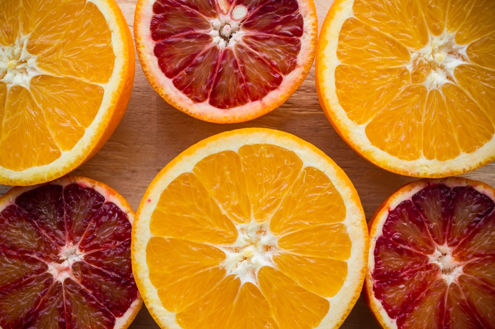
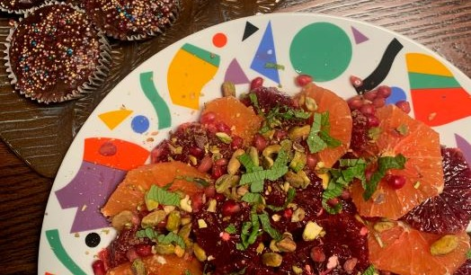
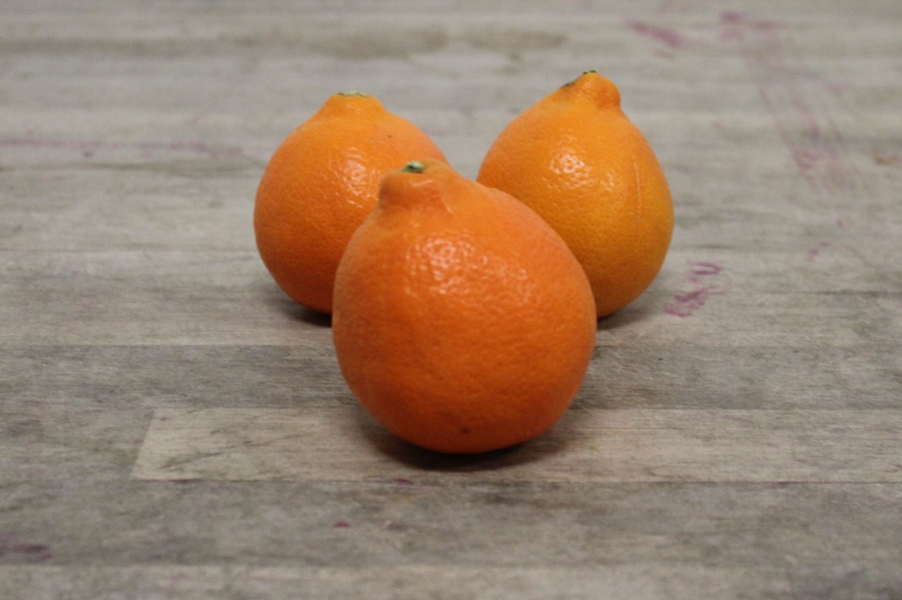
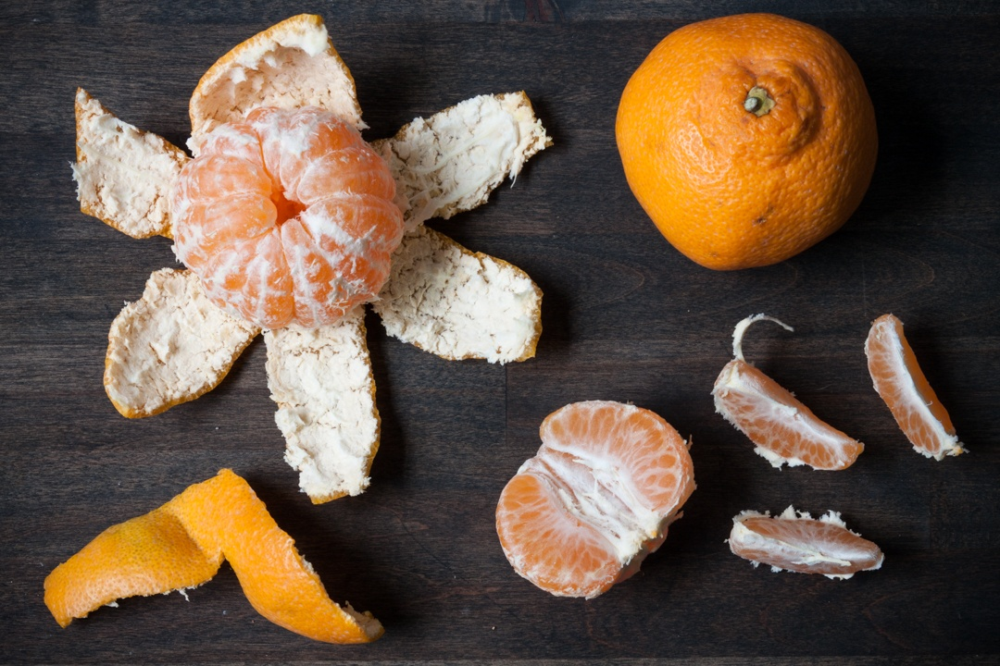
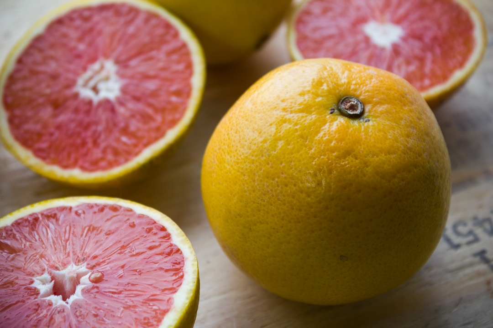
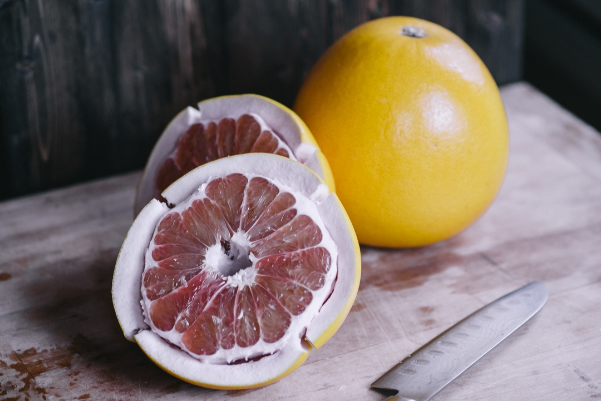

Orange You Glad You Know Your Citrus Varieties?
- by Boston Organics on Jan 14, 2025
It's easy to forget that oranges were once an exotic fruit in the North East. Thanks to a steady and sophisticated supply chain they are now available year round. Not only is citrus a great source of vitamin C and fiber, but their bright colors provide a burst of light and hope during the dark days of winter. As we get farther into winter, citrus season picks up! You will start to see a variety of sweet and flavorful fruit zipped up in its own brightly colored jacket. Make the most of the season with our guide to the most common (and delicious) citrus varieties you can expect to see in your Boston Organics deliveries, as well as tips for keeping these little gems fresh.
Navel Oranges
Navel oranges are one of the most popular and commonly found citrus varieties, known for their thick skin, sweet, refreshing flavor, and bumpy, layered "navel" on one end. This growth is actually a second fruit that develops within the main one. Enjoy both the bright flavor of the navel and the delicious scent that fills the air when you first break it open. Navels are currently propagated through grafting, and are all clones of the same centuries-old tree. LIke the Cavendish banana, navel trees are all clones. (Which is not the same as genetic modification.)
Blood Oranges
Officially known as Moro oranges, one slice down the middle reveals how this
fruit got its sanguineous nickname. High
concentrations of anthocyanin, the same antioxidant that makes blueberries blue and cranberries
red, gives the Moro
orange its vibrant, blood-red flesh.The skin of a blood orange can range from light orange to
dark orange with some
distinctive red marbling. The flavor of Moro blood oranges is a complex blend of sweet and tart
with plum and
raspberry-like overtones.
Blood oranges grow particularly well in a Mediterranean climate where the days are warm, but the
nights are cool. While
most of our blood oranges come from Florida or California, Italy is one of the top producers of
blood oranges. Showcase
beautiful blood oranges with other citrus in this gorgeous dessert salad with pistachios and
mint.
Tangelo
Tangelos are distinct in their deep orange peel. They are sweet and juicy—so juicy that you may want to have a stash of napkins nearby, or maybe even a sink. Though there are several varieties of tangelo available, one of the most popular is the Minneola tangelo, a cross between a Duncan grapefruit and a Dancy tangerine. Minneolas are sometimes referred to as Honeybells commercially due to the stem-end nub on the fruit.
Satsuma Mandarins
The Japanese introduced Americans to Satsuma mandarins in the late 19th century, and they were in such high demand that nearly one million trees were imported and planted in the US within a three year span. Satsuma mandarins ripen earlier than many other citrus varieties, and their arrival often marks the beginning of citrus season. The trees can also survive freezing temperatures, which makes them a resilient option for organic farmers facing volatile weather. Satsuma mandarins are easy to peel and have very few seeds, making them ideal for snacking. They also taste great dipped in salted chocolate! Mandarins and other small citrus like tangerines, tangelos and clementines are sometimes referred to as zipper-fruit due to the ease with which their peels can be removed. Sometimes the fruit may even feel squishy to the touch because there is excess space between the peel and the flesh. When in doubt, it's best to open them up to determine their ripeness rather than risk tossing a perfectly delicious fruit!
Cara Cara Oranges
Cara Cara oranges have a yellowish-orange peel and look nearly identical to a standard navel orange from the outside. But slice one open and you'll discover a bright pinkish-red flesh. This coloring is caused by an abundance of lycopene, a caratenoid and powerful antioxidant that gives tomatoes their hue. Cara Cara oranges are sweet and tangy with hints of cherry and notes of cranberry and blackberry. Cara Cara oranges have a low acid content. Though they look like small grapefruits, they are far sweeter.
Pomelos
If you receive what appears to be an enormous grapefruit in your Boston Organics box, don't be alarmed. It is, in fact, a pomelo. These large citrus fruits are one of four species which have been used to breed most commercially available citrus varieties. Grapefruit, for example, is a hybridization of pomelo and sweet orange, which is itself of cross between a pomelo and a mandarin. Pomelos are popular in southeast Asia, where the plant originated. If you’ve never seen one before, you are in for a treat. The yellow-green rind is thick but soft, and peels easily. If you’re not sure how to tackle your organic pomelo, check out this video for some pro tips. Once you have peeled and sectioned the pomelo, the white or pink flesh is ready to eat. Enjoy it straight or with a sprinkle of salt and pepper, a preferred Thai preparation.
Stay Fresh!
As bold and flavorful as they are, citrus fruits do have a sensitive side. Citrus can be stored at room temperature and out of direct sunlight for up to a week, but when exposed to warm or damp conditions, they tend to break down more quickly. So how do you keep them fresh longer? Here are some tips to help your citrus stay fresh and delicious. Keep citrus fruits in the crisping drawer of your refrigerator. This will keep fruit fresh for well over a week. When storing citrus in the fridge, avoid using a plastic bag because droplets of moisture can get trapped and promote mold growth. Be sure to take the fruit out of the refrigerator 15-20 minutes before eating to allow the fruit to warm up. Allowing the fruit to reach room temperature will make the juice sweeter and the skin easier to peel. Enjoy citrus season!